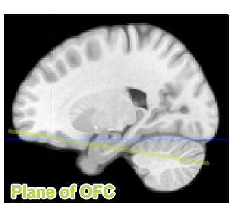
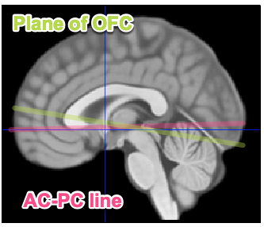
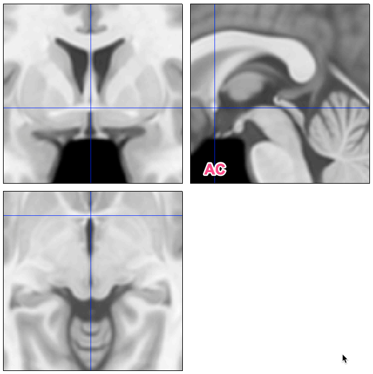
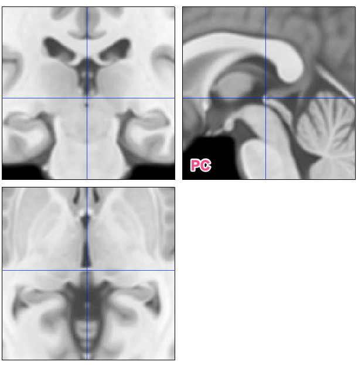

It’s important to be consistent in how slices are prescribed across
participants, because different orientations and angles produce
different patterns of susceptibility artifacts. This document outlines a
method of prescribing slices for Echo Planar Imaging BOLD fMRI that aims
to help ensure consistency of imaging data across scans and sites. It
prioritizes coverage of the dorsal part of the cerebral cortex (i.e.,
sensorimotor cortex) and signal quality in the orbitofrontal cortex.
Note: This is intended for functional scans. Structural and diffusion
scans will often have a different slice prescriptions.
Slice orientation
If slices are not rotated, then images are “true axial” and oriented
to the scanner bore. Rotation of this slice plane (aka “angulation” or
“oblique” scanning) is a standard practice and results in “axial” scans.
Rotation will allow for a level of consistency across subjects and is
more likely to avoid truncation of the brain, particularly for subjects
with large crania [1].
Axial scans can follow a variety of protocols for establishing the
slice plane, the most common of which for MRI the AC-PC line [2]. (See
“AC-PC Location” below.) This requires locating the anterior and
posterior commissures, which are small structures, and this can be
challenging using localizer images.
The proposed slice orientation protocol uses a simpler method: slice
prescription should follow the plane of the orbitofrontal cortex (OFC;
Figure 2). This is tilted approximately 20 degrees up from the AC-PC
line, so that the anterior portion of the slices are slightly above the
AC-PC line and posterior portion below the AC-PC line (Figure 3).
| Figure 2: Slice plane oriented to match orbitofrontal cortex (OFC)
in parasagittal view. |
 |
| Figure 3: Plane of OFC (slice plane) tilted up relative to AC-PC
line in sagittal midline view. |
 |
Field of view
The apical (top) portion of the cortex (sensorimotor cortex) should
lie in the center of the 2nd-slice from the top (Figure 4). Put another
way: Prescribe the slices so that the top slice is one slice above the
gray matter. This avoids positioning gray matter in the top slice, which
is subject to artifacts related to head movement, while retaining as
much coverage of the whole brain as possible.
In rare cases when the head is particularly large, this positioning
will sacrifice coverage of the caudal brainstem and cerebellum, which
has poor signal quality and coverage across studies, preserving coverage
of sensorimotor cortex.
AC-PC Location
The anterior commissure (AC) and posterior commissure (PC) are white
matter tracts connecting the hemispheres (Figure 1).
| Figure 1: AC and PC locations (crosshairs in three
orthogonal views) on template brain. |
 |
 |
References
[1] Mennes et al. (2014). Optimizing full-brain coverage in human
brain MRI through population distributions of brain size.
Neuroimage 98: 513-20. doi: 10.1016/j.neuroimage.2014.04.030
[2] Otake et al. (2018). A guide to identification and selection of
axial planes in magnetic resonance imaging of the brain. Neuroradiol
J 31(4): 336–344. doi: 10.1177/1971400918769911